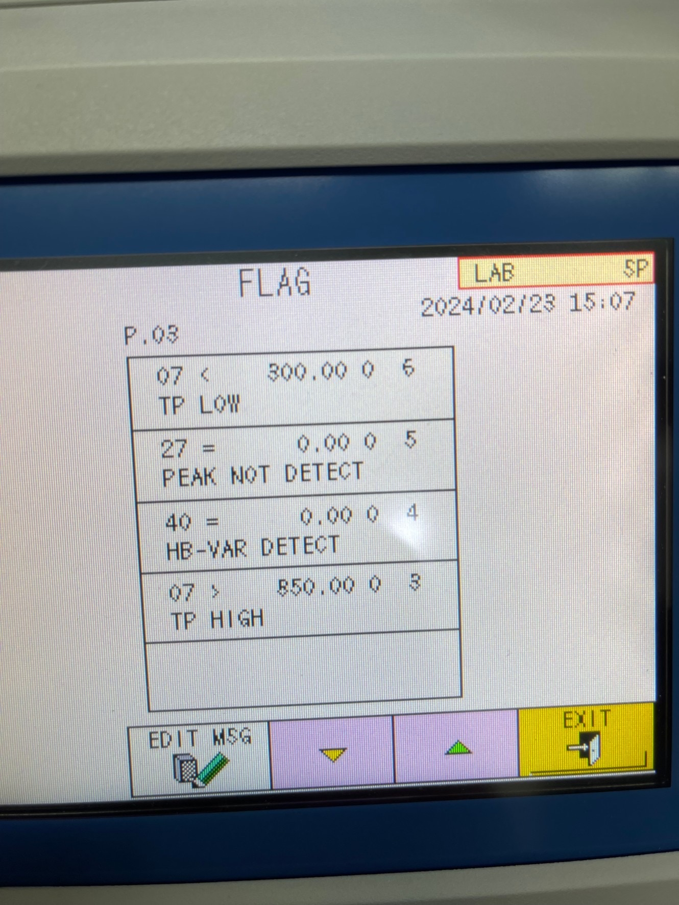
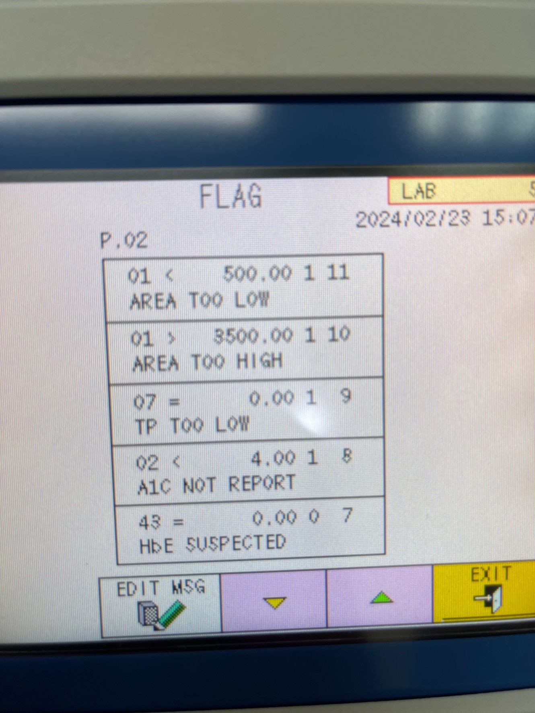
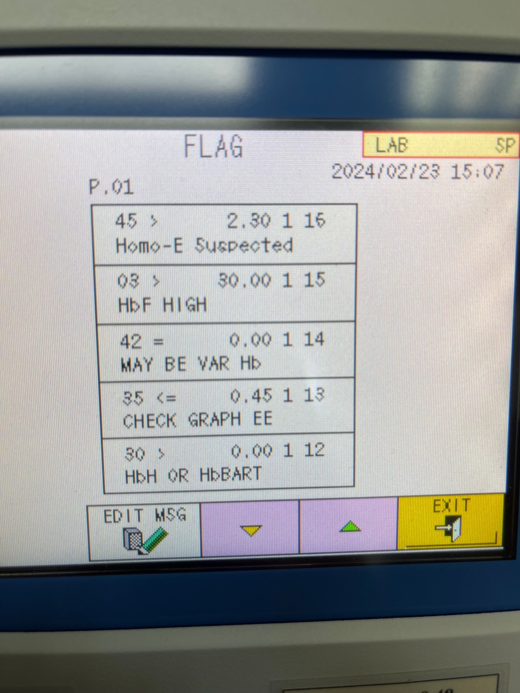
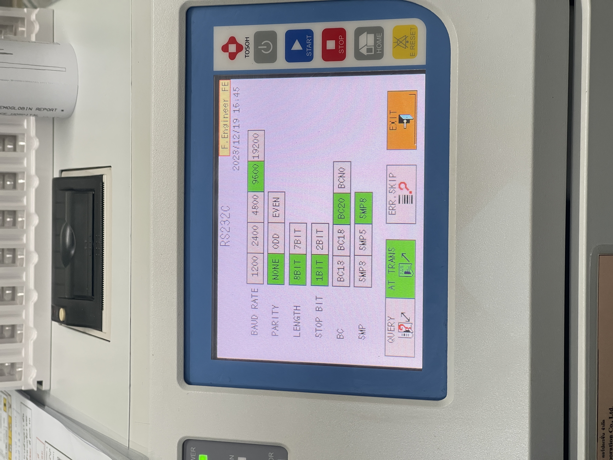

Display/Analysis Mode
Title Bar Display
The title at the top of the main screen displays the current assay mode in operation.
After the POWER key is pressed, the first screen displayed is the main screen (first screen). HbA1c / STD ANALYSIS is displayed at the top of the screen. During analysis, the main screen should remain displayed.
Mode Information from VAR Analysis Guidebook
Title Display Function: "Displays the assay mode currently in operation"
STD ANALYSIS Mode
- Standard analysis mode
- For routine hemoglobin samples
- Default display mode
- Standard peak detection
VAR ANALYSIS Mode
- Variant analysis mode
- For abnormal hemoglobin variants
- Extended peak detection
- Identifies unknown peaks
Main Screen Display Components
| Component | Location | Information Displayed |
|---|---|---|
| Title | Top of screen | Displays the assay mode currently in operation (STD ANALYSIS / VAR ANALYSIS) |
| Program version number | Upper section | Software version |
| Current user name and authority | Upper section | SP (Super User) or OP (Operator) |
| Status | Upper left | Current operation status (WARMING-UP, STAND-BY, ANALYSIS, WASH, COL.WASH, BUFF PRIME, PUMP WASH, PURGING) |
| Calibration Date | Right side | Date of latest calibration performed |
FLAG Parameter Setting
What are FLAGS?
According to the Operator's Manual:
Accessing FLAG Settings
Menu Path: [Main screen] → [MENU] → [UTILITIES] → [FLAG key]
FLAG Screen Display Components
| Component | Description |
|---|---|
| 1. Criteria (code/condition/num. value) | Defines the condition that triggers the flag (e.g., TOTAL AREA < 500) |
| 2. Flag message output | Text message when result meets condition (maximum 16 characters) |
| 3. Flag Level | Controls how result is displayed/reported (Level 0 or Level 1) |
| 4. Flag superiority | Priority ranking 1-20 (larger figure = more superior) |
FLAG Levels - Critical Distinction
✅ LEVEL 0
- The assay values ARE displayed/printed
- Values ARE transmitted to host with FLAG
- Patient sees the actual result
- FLAG message included with report
❌ LEVEL 1
- Shows "---" instead of assay result
- "0" or blank transmitted to host
- Result NOT reported to patient
- FLAG message included with report
"(Level 0: The assay values are displayed/printed or transmitted to the host with Flag.)"
"(Level 1: '---' is displayed or printed in the field of the assay result with Flag. But a blank or '0' is transmitted to the host computer with Flag.)"
Flag Configuration
Maximum number of flags: Up to 20 flags can be input
Automatic FLAG Messages
AREA-Related FLAGS
| FLAG Message | TOTAL AREA Range | Status | Recommended Action |
|---|---|---|---|
| AREA TOO LOW | < 500 | Critical - Below minimum | Re-dilute sample at 1:100 (INCREASE mode in STAT) |
| AREA LOW | 500-700 | Borderline low | Acceptable but monitor |
| AREA HIGH | 3000-3500 | Borderline high | Re-dilute sample at 1:400 (DECREASE mode in STAT) |
| AREA TOO HIGH | > 3500-4000 | Critical - Exceeds range | Must re-dilute and re-assay |
Other Critical Error Messages
| Error Code | Message | Condition/Cause | Recommended Action |
|---|---|---|---|
| 201 | CALIB ERROR | Calibration result deviation ≥0.3% between runs OR ±30% from assigned value | Check calibrator preparation, buffer lot matching, column condition, chromatograms |
| 100 | PRESSURE HIGH | Pump pressure exceeds specification by more than +4 MPa of initial pressure | Replace filter first; if persists, replace column |
| 101 | PRESSURE LOW | Air in pump or empty buffer/check valve issue | Execute DRAIN FLUSH or PUMP operation; replace buffer if empty |
| 221 | NOT DETECT [peak name] | Specific hemoglobin peak could not be detected | Check buffer concentration, column age, sample quality. Refer to abnormal chromatograms section |
| TP LOW / TP TOO LOW | Theoretical Plate Low | Poor peak shape on sA1c or s-A1c peak becomes broad | May indicate column degradation OR variant hemoglobin patient |
FLAG Message Printout Example
From Operator's Manual, Section 3.9 (Test Report Interpretation):
FLAG message: "The analyzer evaluates the result and reports messages. If there is any message in this area, results may be incorrect / invalid."
Main Screen Operation Status
Status Indicators
The following status indications are displayed in the upper left of the main screen during analyzer operation:
| Status | Description |
|---|---|
| WARMING-UP | System initialization; pump equilibrates assay lines and analysis column. Automatically equilibrate for approximately 8 minutes after POWER key is pressed. |
| STAND-BY | Ready state; pump stopped, Elution Buffer not consumed. System is ready for sample assay. |
| ANALYSIS | During sample assay; first result approximately 1 minute from sample detection. |
| WASH | Post-run column wash cycle. |
| COL.WASH | Column wash operation manual execution. |
| BUFF PRIME | Buffer priming operation; approximately 5 mL each Buffer 1 & 2 replaced. |
| PUMP WASH | Pump wash operation for system maintenance. |
| PURGING | Air purging from system after standby period exceeds 70 minutes. |
Key Settings Referenced in Manual
Parameter Settings (Section 4.9)
According to Operator's Manual Section 4.9, various parameters can be configured through the PARAMETER screen, including:
- H/W BOTTLE TYPE setting (for 4L bottle hemolysis solution)
- WASH MODE (NORMAL or SIMPLE)
- LOG-OFF TIMER (delay time before automatic log-off)
- CALIB TYPE (NGSP or IFCC units)
- Sample number settings
- And other analyzer operating conditions
Report Format Options
According to Section 3.9 (Assay Result Display):
| Format Code | Format Name | Description |
|---|---|---|
| (0) | STD FORM | Standard detailed format with all peak information |
| (1) | SIMPLE FORM | Simplified format with main results only |
| (3) | STD+R FORM | Standard format with reagent information |
| (8) | MNT+R FORM | Maintenance format with reagent tracking |
| (9) | MAINTE FORM | Maintenance-focused format |
Real-World Analyzer Screens
These screenshots show the actual FLAG settings screens and analyzer interface in operation:
Screenshot 1: FLAG Settings (P.03) - Advanced Flags
Shows FLAG configuration screen with TP LOW, PEAK NOT DETECT, HB-VAR DETECT, and TP HIGH flags.

Screenshot 2: FLAG Settings (P.02) - Area-Based Flags
Shows AREA-related FLAGS: AREA TOO LOW, AREA TOO HIGH, TP TOO LOW, A1C NOT REPORT, and HbE SUSPECTED.

Screenshot 3: FLAG Settings (P.01) - Hemoglobin Variant Flags
Shows FLAGS related to hemoglobin variants: Homo-E Suspected, HbF HIGH, MAY BE VAR Hb, CHECK GRAPH EE, HbH or HbBART.

Screenshot 4: Analyzer Interface - Serial Communication Settings
Shows the TOSOH HLC-723G11 analyzer interface with serial communication (RS232C) configuration settings for BAUD RATE, PARITY, LENGTH, STOP BIT, BC, and SMP parameters.
